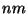
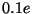
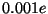

The NWChem Electrostatic Potential (ESP) module derives partial atomic charges that fit the quantum mechanical electrostatic potential on selected grid points.
The ESP module is specified by the NWChem task directive
task esp
The input for the module is taken from the ESP input block
ESP ... END
recalculateis given, the grid and the electrostatic potential is recalculated.
range <real rcut>where
rcut is the maximum distance in  between a grid point and
any of the atomic centers. When omitted, a default value for rcut of
0.3 is used.
spacing <real spac>where
spac is the grid spacing in for the regularly spaced
grid points. If not specified, a default spacing of 0.05 is used.
radius <integer iatnum> <real atrad>where
iatnum is the atomic number for which a van der Waals radius
of atrad in will be used in the grid point determination.
Default values will be used for atoms not specified.
probe <real probe default 0.07>
factor <real factor default 1.0>All grid points are discarded that lie within a distance
factor*(radius(i)+probe) from any atom .
screen [<real scrtol default 1.0D-5>]
constrain <real charge> {<integer iatom>}
where charge is the net charge of the set of atoms {iatom}.
A negative atom number iatom can be used to specify that the
partial charge of that atom is substracted in the sum for the set.
constrain <real charge> <integer iatom> through <integer jatom>where
charge is the net charge of the set of atoms {[iatom:jatom]}.
constrain equal {<integer iatom>}
constrain group <integer iatom> <integer jatom> to <integer katom> <integer latom>resulting in the same charge for atoms
iatom and katom, for
atoms iatom+1 and katom+1, ... for atoms jatom and latom.
constrain xhn <integer iatom> {<integer jatom>}
can be used to constrain the set {iatom,{jatom}} to zero charge, and
constrain all atoms in {jatom} to have the same charge. This can be used,
for example, to restrain a methyl group to zero charge, and have all hydrogen
carrying identical charges.
restrain [hfree] (harmonic [<real scale>] | \
hyperbolic [<real scale> [<real tight>]] \
[maxiter <integer maxit>] [tolerance <real toler>])
where hfree can be specified to exclude hydrogen atoms from the
restaining procecure. Variable scale is the strength of the
restraint potential, with a default of for the harmonic
restraint and a default value of for the hyperbolic restraint.
For the hyperbolic restraints the tightness tight can be specified
to change the default value of . The iteration count that needs to
be carried out for the hyperbolic restraint is determined by the
maximum number of allowed iterations maxiter, with a default value
of 25, and the tolerance in the convergence of the partial charges
toler, with a default of .